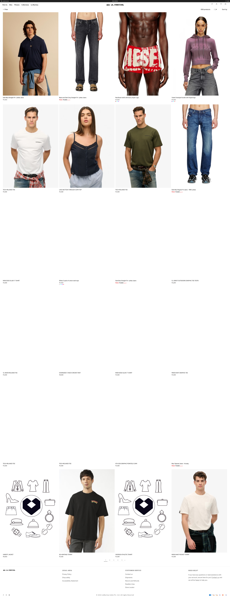
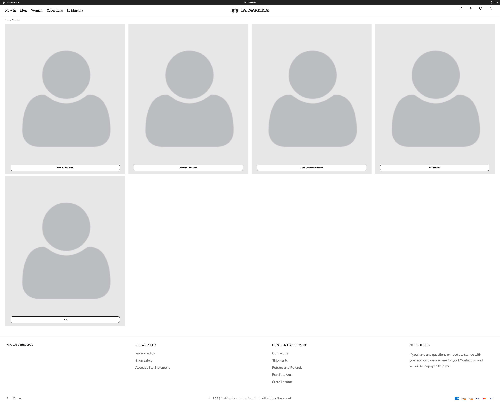
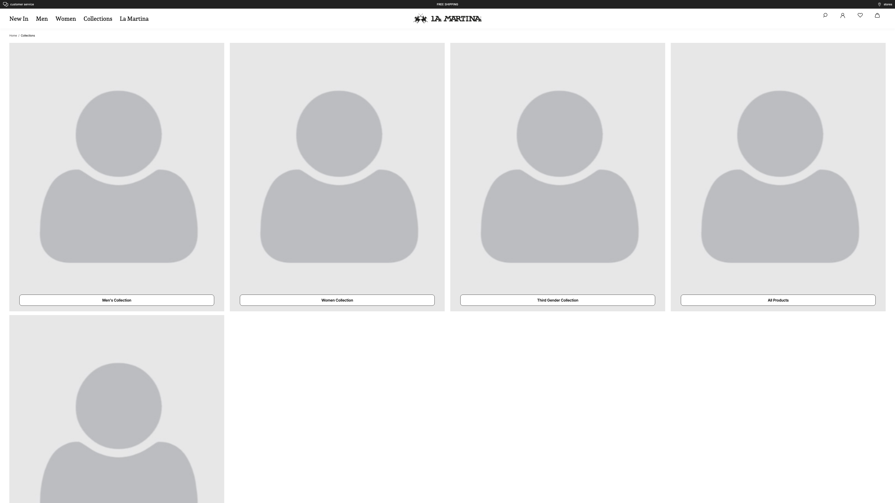
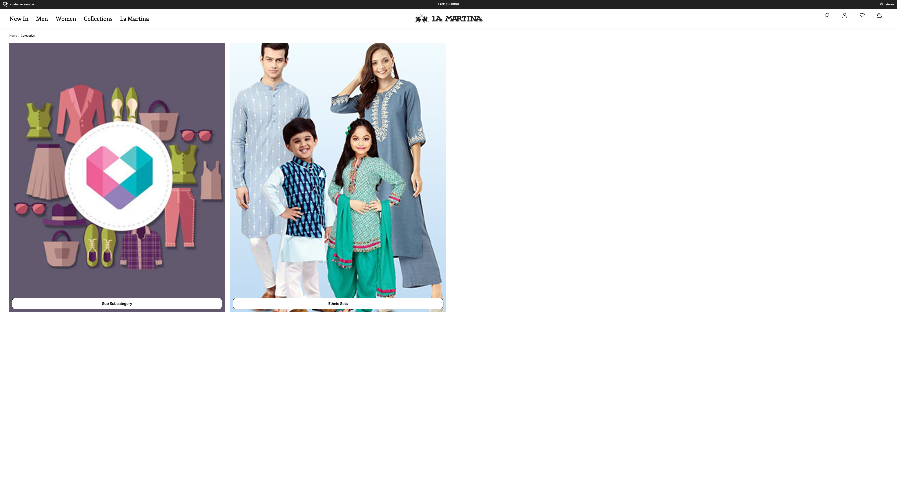
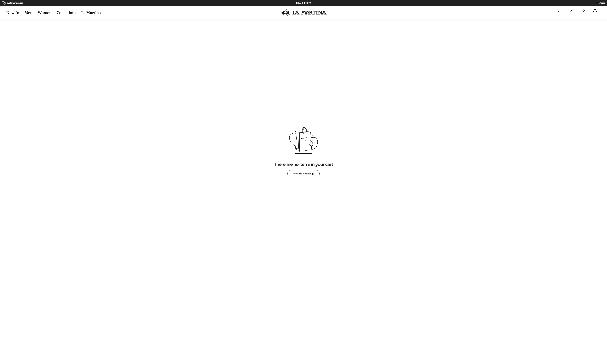

4K Bug Report RECHECKED
2026-04-03 · 22 bugs · 7 pages + PDP + Search · 3840×2160
lamartina.fynd.io2 Critical16 High4 Medium0 Low
22
Total Bugs
2
Critical
16
High
4
Medium
0
Low
7
Pages
All Bugs (22)
|
High BUG-001 — Nav Bar Covers Only 14% of Viewport (Site-Wide) (lamartina.fynd.io) NEW
| Severity | High |
| Category | UI Alignment 4K Responsive |
| Location | All pages on 4K (3840x2160) |
| Description | Navigation bar (nav.xDvOo) only covers 14% (554px) of the 4K viewport (3840px) on all pages. Content is left-aligned with a massive empty gap on the right. Affected pages: /, /products, /collections, /categories, /cart, /auth/login, /contact-us |
| Steps | 1. Open any page on https://lamartina.fynd.io at 4K (3840x2160) 2. Nav bar occupies only left 14% of screen 3. Right 86% is completely empty |
| Expected | Navigation should span 100% of viewport |
| Actual | Nav is 554px (14% of 3840px) — site-wide issue |
| Fix | Set nav width: 100% and remove max-width constraints. |

Screenshot: All pages on 4K (3840x2160) — Nav Bar Covers Only 14% of Viewport (Site-Wide)
High BUG-002 — 7 Blurry Image(s) — / on 4K (lamartina.fynd.io) NEW
| Severity | High |
| Category | Image Quality 4K Responsive |
| Location | / on 4K (3840x2160) |
| Description | 7 image(s) are visibly blurry — source too small for 4K render size (2.1x upscale). Blurry images: 1. "MEN PRE Collection" — source: 578px, displayed: 1221px (2.1x upscale) 2. "WOMEN PRE Collection" — source: 588px, displayed: 1221px (2.1x upscale) 3. "THIRD GENDER PRE Collection" — source: 588px, displayed: 1221px (2.1x upscale) 4. "theme-default-image-fd59550e-51ba-4d82-8b42-4a0c8f" — source: 578px, displayed: 1236px (2.1x upscale) 5. "theme-default-image-89db08ea-f095-4c50-8542-b1d4d4" — source: 588px, displayed: 1236px (2.1x upscale) 6. "theme-default-image-aa242ba4-23e5-4dcf-8e32-1e60e1" — source: 588px, displayed: 1236px (2.1x upscale) |
| Steps | 1. Open https://lamartina.fynd.io/ on 4K 2. Images appear pixelated 3. Inspect confirms natural size << rendered size Blurry images: 1. "MEN PRE Collection" — source: 578px, displayed: 1221px (2.1x upscale) 2. "WOMEN PRE Collection" — source: 588px, displayed: 1221px (2.1x upscale) 3. "THIRD GENDER PRE Collection" — source: 588px, displayed: 1221px (2.1x upscale) 4. "theme-default-image-fd59550e-51ba-4d82-8b42-4a0c8f" — source: 578px, displayed: 1236px (2.1x upscale) 5. "theme-default-image-89db08ea-f095-4c50-8542-b1d4d4" — source: 588px, displayed: 1236px (2.1x upscale) 6. "theme-default-image-aa242ba4-23e5-4dcf-8e32-1e60e1" — source: 588px, displayed: 1236px (2.1x upscale) |
| Expected | Source image should be >= rendered size (1:1 ratio) |
| Actual | 7 images upscaled 2.1x |
| Fix | Serve higher-res images via srcset/CDN params. Min source: 900px for 4K. |

Screenshot: / on 4K (3840x2160) — 7 Blurry Image(s) — / on 4K
High BUG-003 — 7 Untappable Elements — / on 4K (lamartina.fynd.io) NEW
| Severity | High |
| Category | UI Alignment 4K Responsive |
| Location | / on 4K (3840x2160) |
| Description | 7 element(s) are under 25px tall — too small to accurately click at 4K. Affected elements: 1. <a>"customer service" — only 133x24px 2. <a>"stores" — only 60x16px 3. <a>"New In" — only 498x23px 4. <a>"Men" — only 498x23px 5. <a>"Women" — only 522x23px 6. <a>"Collections" — only 522x23px 7. <a>"La Martina" — only 498x23px |
| Steps | 1. Open https://lamartina.fynd.io/ on 4K 2. Try clicking these elements Too small: 1. <a>"customer service" — only 133x24px 2. <a>"stores" — only 60x16px 3. <a>"New In" — only 498x23px 4. <a>"Men" — only 498x23px 5. <a>"Women" — only 522x23px 6. <a>"Collections" — only 522x23px 7. <a>"La Martina" — only 498x23px |
| Expected | Interactive elements should be >= 44x44px (WCAG) |
| Actual | 7 elements under 25px tall |
| Fix | Increase padding/font-size for links and buttons. Min target: 44x44px. |
Screenshot: / on 4K (3840x2160) — 7 Untappable Elements — / on 4K
Medium BUG-004 — 9 Images Missing Alt Text — / (lamartina.fynd.io) NEW
| Severity | Medium |
| Category | Accessibility SEO |
| Location | / on 4K (3840x2160) |
| Description | 9 large visible image(s) missing alt attributes (WCAG 1.1.1). Examples: 1. "...theme-default-image-f34fbb73-1fb7-4f54-b" (3840px) — missing alt 2. "...theme-default-image-fd59550e-51ba-4d82-8" (1236px) — missing alt 3. "...theme-default-image-89db08ea-f095-4c50-8" (1236px) — missing alt 4. "...theme-default-image-aa242ba4-23e5-4dcf-8" (1236px) — missing alt |
| Steps | 1. Open https://lamartina.fynd.io/ 2. Inspect images 3. Multiple images lack alt text Examples: 1. "...theme-default-image-f34fbb73-1fb7-4f54-b" (3840px) — missing alt 2. "...theme-default-image-fd59550e-51ba-4d82-8" (1236px) — missing alt 3. "...theme-default-image-89db08ea-f095-4c50-8" (1236px) — missing alt 4. "...theme-default-image-aa242ba4-23e5-4dcf-8" (1236px) — missing alt |
| Expected | All meaningful images should have alt text |
| Actual | 9 images missing alt |
| Fix | Add descriptive alt text to all product/content images. |
Screenshot: / on 4K (3840x2160) — 9 Images Missing Alt Text — /
High BUG-005 — 17 Blurry Image(s) — /products on 4K (lamartina.fynd.io) NEW
| Severity | High |
| Category | Image Quality 4K Responsive |
| Location | /products on 4K (3840x2160) |
| Description | 17 image(s) are visibly blurry — source too small for 4K render size (3.1x upscale). Blurry images: 1. "Dark Blue Straight Fit- Larkee Jeans" — source: 300px, displayed: 927px (3.1x upscale) 2. "Black and Dark Grey Straight Fit- Larkee Jeans" — source: 300px, displayed: 927px (3.1x upscale) 3. "Red Boxer briefs with blurry Super Logo" — source: 300px, displayed: 927px (3.1x upscale) 4. "Violet Overdyed hoodie with frayed logo" — source: 300px, displayed: 927px (3.1x upscale) 5. "TECH RELAXED TEE" — source: 300px, displayed: 927px (3.1x upscale) 6. "LACE BUTTON THROUGH CAMI TOP" — source: 300px, displayed: 927px (3.1x upscale) |
| Steps | 1. Open https://lamartina.fynd.io/products on 4K 2. Images appear pixelated 3. Inspect confirms natural size << rendered size Blurry images: 1. "Dark Blue Straight Fit- Larkee Jeans" — source: 300px, displayed: 927px (3.1x upscale) 2. "Black and Dark Grey Straight Fit- Larkee Jeans" — source: 300px, displayed: 927px (3.1x upscale) 3. "Red Boxer briefs with blurry Super Logo" — source: 300px, displayed: 927px (3.1x upscale) 4. "Violet Overdyed hoodie with frayed logo" — source: 300px, displayed: 927px (3.1x upscale) 5. "TECH RELAXED TEE" — source: 300px, displayed: 927px (3.1x upscale) 6. "LACE BUTTON THROUGH CAMI TOP" — source: 300px, displayed: 927px (3.1x upscale) |
| Expected | Source image should be >= rendered size (1:1 ratio) |
| Actual | 17 images upscaled 3.1x |
| Fix | Serve higher-res images via srcset/CDN params. Min source: 900px for 4K. |

Screenshot: /products on 4K (3840x2160) — 17 Blurry Image(s) — /products on 4K
High BUG-006 — 7 Untappable Elements — /products on 4K (lamartina.fynd.io) NEW
| Severity | High |
| Category | UI Alignment 4K Responsive |
| Location | /products on 4K (3840x2160) |
| Description | 7 element(s) are under 25px tall — too small to accurately click at 4K. Affected elements: 1. <a>"customer service" — only 133x24px 2. <a>"stores" — only 60x16px 3. <a>"New In" — only 498x23px 4. <a>"Men" — only 498x23px 5. <a>"Women" — only 522x23px 6. <a>"Collections" — only 522x23px 7. <a>"La Martina" — only 498x23px |
| Steps | 1. Open https://lamartina.fynd.io/products on 4K 2. Try clicking these elements Too small: 1. <a>"customer service" — only 133x24px 2. <a>"stores" — only 60x16px 3. <a>"New In" — only 498x23px 4. <a>"Men" — only 498x23px 5. <a>"Women" — only 522x23px 6. <a>"Collections" — only 522x23px 7. <a>"La Martina" — only 498x23px |
| Expected | Interactive elements should be >= 44x44px (WCAG) |
| Actual | 7 elements under 25px tall |
| Fix | Increase padding/font-size for links and buttons. Min target: 44x44px. |

Screenshot: /products on 4K (3840x2160) — 7 Untappable Elements — /products on 4K
High BUG-007 — 1 Blurry Image(s) — /collections on 4K (lamartina.fynd.io) NEW
| Severity | High |
| Category | Image Quality 4K Responsive |
| Location | /collections on 4K (3840x2160) |
| Description | 1 image(s) are visibly blurry — source too small for 4K render size (3.0x upscale). Blurry images: 1. "xzuftshmmw4yuwzb12pm.png?dpr=1" — source: 312px, displayed: 922px (3.0x upscale) |
| Steps | 1. Open https://lamartina.fynd.io/collections on 4K 2. Images appear pixelated 3. Inspect confirms natural size << rendered size Blurry images: 1. "xzuftshmmw4yuwzb12pm.png?dpr=1" — source: 312px, displayed: 922px (3.0x upscale) |
| Expected | Source image should be >= rendered size (1:1 ratio) |
| Actual | 1 images upscaled 3.0x |
| Fix | Serve higher-res images via srcset/CDN params. Min source: 900px for 4K. |

Screenshot: /collections on 4K (3840x2160) — 1 Blurry Image(s) — /collections on 4K
High BUG-008 — 8 Untappable Elements — /collections on 4K (lamartina.fynd.io) NEW
| Severity | High |
| Category | UI Alignment 4K Responsive |
| Location | /collections on 4K (3840x2160) |
| Description | 8 element(s) are under 25px tall — too small to accurately click at 4K. Affected elements: 1. <a>"customer service" — only 133x24px 2. <a>"stores" — only 60x16px 3. <a>"New In" — only 498x23px 4. <a>"Men" — only 498x23px 5. <a>"Women" — only 522x23px 6. <a>"Collections" — only 522x23px 7. <a>"La Martina" — only 498x23px 8. <a>"Home" — only 33x15px |
| Steps | 1. Open https://lamartina.fynd.io/collections on 4K 2. Try clicking these elements Too small: 1. <a>"customer service" — only 133x24px 2. <a>"stores" — only 60x16px 3. <a>"New In" — only 498x23px 4. <a>"Men" — only 498x23px 5. <a>"Women" — only 522x23px 6. <a>"Collections" — only 522x23px 7. <a>"La Martina" — only 498x23px 8. <a>"Home" — only 33x15px |
| Expected | Interactive elements should be >= 44x44px (WCAG) |
| Actual | 8 elements under 25px tall |
| Fix | Increase padding/font-size for links and buttons. Min target: 44x44px. |

Screenshot: /collections on 4K (3840x2160) — 8 Untappable Elements — /collections on 4K
Medium BUG-009 — 5 Images Missing Alt Text — /collections (lamartina.fynd.io) NEW
| Severity | Medium |
| Category | Accessibility SEO |
| Location | /collections on 4K (3840x2160) |
| Description | 5 large visible image(s) missing alt attributes (WCAG 1.1.1). Examples: 1. "...xzuftshmmw4yuwzb12pm.png?dpr=1" (922px) — missing alt 2. "...xzuftshmmw4yuwzb12pm.png?dpr=1" (922px) — missing alt 3. "...xzuftshmmw4yuwzb12pm.png?dpr=1" (922px) — missing alt 4. "...xzuftshmmw4yuwzb12pm.png?dpr=1" (922px) — missing alt |
| Steps | 1. Open https://lamartina.fynd.io/collections 2. Inspect images 3. Multiple images lack alt text Examples: 1. "...xzuftshmmw4yuwzb12pm.png?dpr=1" (922px) — missing alt 2. "...xzuftshmmw4yuwzb12pm.png?dpr=1" (922px) — missing alt 3. "...xzuftshmmw4yuwzb12pm.png?dpr=1" (922px) — missing alt 4. "...xzuftshmmw4yuwzb12pm.png?dpr=1" (922px) — missing alt |
| Expected | All meaningful images should have alt text |
| Actual | 5 images missing alt |
| Fix | Add descriptive alt text to all product/content images. |
Screenshot: /collections on 4K (3840x2160) — 5 Images Missing Alt Text — /collections
High BUG-010 — 8 Untappable Elements — /categories on 4K (lamartina.fynd.io) NEW
| Severity | High |
| Category | UI Alignment 4K Responsive |
| Location | /categories on 4K (3840x2160) |
| Description | 8 element(s) are under 25px tall — too small to accurately click at 4K. Affected elements: 1. <a>"customer service" — only 133x24px 2. <a>"stores" — only 60x16px 3. <a>"New In" — only 498x23px 4. <a>"Men" — only 498x23px 5. <a>"Women" — only 522x23px 6. <a>"Collections" — only 522x23px 7. <a>"La Martina" — only 498x23px 8. <a>"Home" — only 33x15px |
| Steps | 1. Open https://lamartina.fynd.io/categories on 4K 2. Try clicking these elements Too small: 1. <a>"customer service" — only 133x24px 2. <a>"stores" — only 60x16px 3. <a>"New In" — only 498x23px 4. <a>"Men" — only 498x23px 5. <a>"Women" — only 522x23px 6. <a>"Collections" — only 522x23px 7. <a>"La Martina" — only 498x23px 8. <a>"Home" — only 33x15px |
| Expected | Interactive elements should be >= 44x44px (WCAG) |
| Actual | 8 elements under 25px tall |
| Fix | Increase padding/font-size for links and buttons. Min target: 44x44px. |

Screenshot: /categories on 4K (3840x2160) — 8 Untappable Elements — /categories on 4K
High BUG-011 — 7 Untappable Elements — /cart on 4K (lamartina.fynd.io) NEW
| Severity | High |
| Category | UI Alignment 4K Responsive |
| Location | /cart on 4K (3840x2160) |
| Description | 7 element(s) are under 25px tall — too small to accurately click at 4K. Affected elements: 1. <a>"customer service" — only 133x24px 2. <a>"stores" — only 60x16px 3. <a>"New In" — only 498x23px 4. <a>"Men" — only 498x23px 5. <a>"Women" — only 522x23px 6. <a>"Collections" — only 522x23px 7. <a>"La Martina" — only 498x23px |
| Steps | 1. Open https://lamartina.fynd.io/cart on 4K 2. Try clicking these elements Too small: 1. <a>"customer service" — only 133x24px 2. <a>"stores" — only 60x16px 3. <a>"New In" — only 498x23px 4. <a>"Men" — only 498x23px 5. <a>"Women" — only 522x23px 6. <a>"Collections" — only 522x23px 7. <a>"La Martina" — only 498x23px |
| Expected | Interactive elements should be >= 44x44px (WCAG) |
| Actual | 7 elements under 25px tall |
| Fix | Increase padding/font-size for links and buttons. Min target: 44x44px. |

Screenshot: /cart on 4K (3840x2160) — 7 Untappable Elements — /cart on 4K
High BUG-012 — 7 Untappable Elements — /auth/login on 4K (lamartina.fynd.io) NEW
| Severity | High |
| Category | UI Alignment 4K Responsive |
| Location | /auth/login on 4K (3840x2160) |
| Description | 7 element(s) are under 25px tall — too small to accurately click at 4K. Affected elements: 1. <a>"customer service" — only 133x24px 2. <a>"stores" — only 60x16px 3. <a>"New In" — only 498x23px 4. <a>"Men" — only 498x23px 5. <a>"Women" — only 522x23px 6. <a>"Collections" — only 522x23px 7. <a>"La Martina" — only 498x23px |
| Steps | 1. Open https://lamartina.fynd.io/auth/login on 4K 2. Try clicking these elements Too small: 1. <a>"customer service" — only 133x24px 2. <a>"stores" — only 60x16px 3. <a>"New In" — only 498x23px 4. <a>"Men" — only 498x23px 5. <a>"Women" — only 522x23px 6. <a>"Collections" — only 522x23px 7. <a>"La Martina" — only 498x23px |
| Expected | Interactive elements should be >= 44x44px (WCAG) |
| Actual | 7 elements under 25px tall |
| Fix | Increase padding/font-size for links and buttons. Min target: 44x44px. |

Screenshot: /auth/login on 4K (3840x2160) — 7 Untappable Elements — /auth/login on 4K
High BUG-013 — Excessive Whitespace (99% unused) — /auth/login on 4K (lamartina.fynd.io) NEW
| Severity | High |
| Category | UI Alignment 4K Responsive |
| Location | /auth/login on 4K (3840x2160) |
| Description | Content uses only 1% (48px) of the 4K viewport — 99% is wasted whitespace. |
| Steps | 1. Open https://lamartina.fynd.io/auth/login on 4K 2. Content confined to narrow column 3. 99% of screen is empty |
| Expected | Content should use 60-80%+ of viewport at 4K |
| Actual | Only 1% utilized (48px of 3840px) |
| Fix | Increase max-width for large viewports. Use responsive layout. |
Screenshot: /auth/login on 4K (3840x2160) — Excessive Whitespace (99% unused) — /auth/login on 4K
High BUG-014 — 7 Untappable Elements — /contact-us on 4K (lamartina.fynd.io) NEW
| Severity | High |
| Category | UI Alignment 4K Responsive |
| Location | /contact-us on 4K (3840x2160) |
| Description | 7 element(s) are under 25px tall — too small to accurately click at 4K. Affected elements: 1. <a>"customer service" — only 133x24px 2. <a>"stores" — only 60x16px 3. <a>"New In" — only 498x23px 4. <a>"Men" — only 498x23px 5. <a>"Women" — only 522x23px 6. <a>"Collections" — only 522x23px 7. <a>"La Martina" — only 498x23px |
| Steps | 1. Open https://lamartina.fynd.io/contact-us on 4K 2. Try clicking these elements Too small: 1. <a>"customer service" — only 133x24px 2. <a>"stores" — only 60x16px 3. <a>"New In" — only 498x23px 4. <a>"Men" — only 498x23px 5. <a>"Women" — only 522x23px 6. <a>"Collections" — only 522x23px 7. <a>"La Martina" — only 498x23px |
| Expected | Interactive elements should be >= 44x44px (WCAG) |
| Actual | 7 elements under 25px tall |
| Fix | Increase padding/font-size for links and buttons. Min target: 44x44px. |

Screenshot: /contact-us on 4K (3840x2160) — 7 Untappable Elements — /contact-us on 4K
High BUG-015 — No Focus Indicators — 63/63 Elements (100%) (lamartina.fynd.io) NEW
| Severity | High |
| Category | Accessibility WCAG 2.4.7 |
| Location | / on 4K (3840x2160) |
| Description | 100% of focusable elements lack visible focus indicators. Keyboard users cannot navigate. WCAG 2.4.7 violation. Examples: 1. <a>"customer service" — no focus style 2. <a>"stores" — no focus style 3. <a>"New In" — no focus style 4. <a>"Men" — no focus style |
| Steps | 1. Open https://lamartina.fynd.io/ on 4K 2. Press Tab to navigate 3. No visible focus ring on any element Examples: 1. <a>"customer service" — no focus style 2. <a>"stores" — no focus style 3. <a>"New In" — no focus style 4. <a>"Men" — no focus style |
| Expected | All interactive elements should show :focus-visible style |
| Actual | 63/63 elements have no focus indicator |
| Fix | Add :focus-visible { outline: 2px solid currentColor; } to all interactive elements. |
Screenshot: / on 4K (3840x2160) — No Focus Indicators — 63/63 Elements (100%)
High BUG-016 — 4 Header Icon(s) Missing (lamartina.fynd.io) NEW
| Severity | High |
| Category | Navigation 4K Responsive |
| Location | / on 4K (3840x2160) |
| Description | 4 essential header icon(s) not found at 4K. Missing: 1. Cart — not found in header 2. Account — not found in header 3. Wishlist — not found in header 4. Search — not found in header |
| Steps | 1. Open https://lamartina.fynd.io/ on 4K 2. Check header for icons Missing: 1. Cart — not found in header 2. Account — not found in header 3. Wishlist — not found in header 4. Search — not found in header |
| Expected | Cart, account, search icons should be visible in header |
| Actual | 4 icons not found |
| Fix | Ensure header icons render at 4K. Check if hidden by media queries. |
Screenshot: / on 4K (3840x2160) — 4 Header Icon(s) Missing
Critical BUG-017 — PDP Size/Variant Selector — Not Found on 4K (lamartina.fynd.io) NEW
| Severity | Critical |
| Category | UI Functionality PDP 4K Responsive |
| Location | /product/dark-blue-straight-fit-larkee-jeans-17576710 on 4K (3840x2160) |
| Description | Product Detail Page: "Size/Variant Selector" is not found or not visible at 4K. This blocks the purchase flow. |
| Steps | 1. Open https://lamartina.fynd.io/product/dark-blue-straight-fit-larkee-jeans-17576710 on 4K 2. Look for Size/Variant Selector 3. Not found or not visible |
| Expected | Size/Variant Selector should be visible and functional |
| Actual | Size/Variant Selector not found at 4K |
| Fix | Check if Size/Variant Selector component renders at 4K. Verify no media queries hide it. |

Screenshot: /product/dark-blue-straight-fit-larkee-jeans-17576710 on 4K (3840x2160) — PDP Size/Variant Selector — Not Found on 4K
Critical BUG-018 — PDP Add to Cart / Buy Button — Not Found on 4K (lamartina.fynd.io) NEW
| Severity | Critical |
| Category | UI Functionality PDP 4K Responsive |
| Location | /product/dark-blue-straight-fit-larkee-jeans-17576710 on 4K (3840x2160) |
| Description | Product Detail Page: "Add to Cart / Buy Button" is not found or not visible at 4K. This blocks the purchase flow. |
| Steps | 1. Open https://lamartina.fynd.io/product/dark-blue-straight-fit-larkee-jeans-17576710 on 4K 2. Look for Add to Cart / Buy Button 3. Not found or not visible |
| Expected | Add to Cart / Buy Button should be visible and functional |
| Actual | Add to Cart / Buy Button not found at 4K |
| Fix | Check if Add to Cart / Buy Button component renders at 4K. Verify no media queries hide it. |
Screenshot: /product/dark-blue-straight-fit-larkee-jeans-17576710 on 4K (3840x2160) — PDP Add to Cart / Buy Button — Not Found on 4K
High BUG-019 — PDP Image Gallery Navigation — Not Found on 4K (lamartina.fynd.io) NEW
| Severity | High |
| Category | UI Functionality PDP 4K Responsive |
| Location | /product/dark-blue-straight-fit-larkee-jeans-17576710 on 4K (3840x2160) |
| Description | Product Detail Page: "Image Gallery Navigation" is not found or not visible at 4K. |
| Steps | 1. Open https://lamartina.fynd.io/product/dark-blue-straight-fit-larkee-jeans-17576710 on 4K 2. Look for Image Gallery Navigation 3. Not found or not visible |
| Expected | Image Gallery Navigation should be visible and functional |
| Actual | Image Gallery Navigation not found at 4K |
| Fix | Check if Image Gallery Navigation component renders at 4K. Verify no media queries hide it. |
Screenshot: /product/dark-blue-straight-fit-larkee-jeans-17576710 on 4K (3840x2160) — PDP Image Gallery Navigation — Not Found on 4K
High BUG-020 — PDP Product Price Display — Not Found on 4K (lamartina.fynd.io) NEW
| Severity | High |
| Category | UI Functionality PDP 4K Responsive |
| Location | /product/dark-blue-straight-fit-larkee-jeans-17576710 on 4K (3840x2160) |
| Description | Product Detail Page: "Product Price Display" is not found or not visible at 4K. |
| Steps | 1. Open https://lamartina.fynd.io/product/dark-blue-straight-fit-larkee-jeans-17576710 on 4K 2. Look for Product Price Display 3. Not found or not visible |
| Expected | Product Price Display should be visible and functional |
| Actual | Product Price Display not found at 4K |
| Fix | Check if Product Price Display component renders at 4K. Verify no media queries hide it. |
Screenshot: /product/dark-blue-straight-fit-larkee-jeans-17576710 on 4K (3840x2160) — PDP Product Price Display — Not Found on 4K
Medium BUG-021 — PDP Product Description — Not Found on 4K (lamartina.fynd.io) NEW
| Severity | Medium |
| Category | UI Functionality PDP 4K Responsive |
| Location | /product/dark-blue-straight-fit-larkee-jeans-17576710 on 4K (3840x2160) |
| Description | Product Detail Page: "Product Description" is not found or not visible at 4K. |
| Steps | 1. Open https://lamartina.fynd.io/product/dark-blue-straight-fit-larkee-jeans-17576710 on 4K 2. Look for Product Description 3. Not found or not visible |
| Expected | Product Description should be visible and functional |
| Actual | Product Description not found at 4K |
| Fix | Check if Product Description component renders at 4K. Verify no media queries hide it. |
Screenshot: /product/dark-blue-straight-fit-larkee-jeans-17576710 on 4K (3840x2160) — PDP Product Description — Not Found on 4K
Medium BUG-022 — Search Returns No Results for "shirt" (lamartina.fynd.io) NEW
| Severity | Medium |
| Category | UI Functionality Search |
| Location | / on 4K (3840x2160) |
| Description | Searching for "shirt" returns no product results on the search results page. |
| Steps | 1. Open https://lamartina.fynd.io/ on 4K 2. Click search 3. Type "shirt" and Enter 4. No results shown |
| Expected | Common search term should return results |
| Actual | No product results displayed |
| Fix | Debug search API/rendering. Verify results component loads at 4K. |

Screenshot: / on 4K (3840x2160) — Search Returns No Results for "shirt"
4K Bug Report (Rechecked) · lamartina.fynd.io · 22 bugs · 2026-04-03